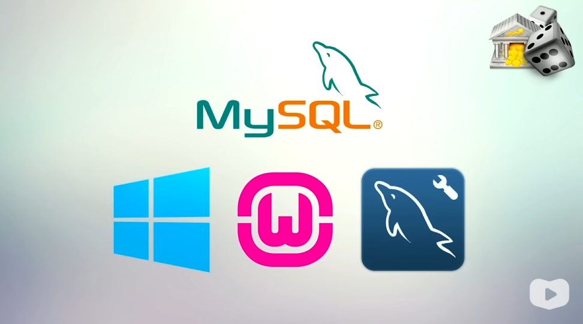

Instalando MySQL e Wamp
por: Ailton A. Nakata
No windows, instale um pacote chamado WampServer:

Download dos softwares
1º Passo - Baixe e instale os programas nessa ordem:
Framework
C++ Visual Studio 2012
MySQL workbench 6.3.6
2º Passo - Instale o Wampserver
Wampserver
Voltar